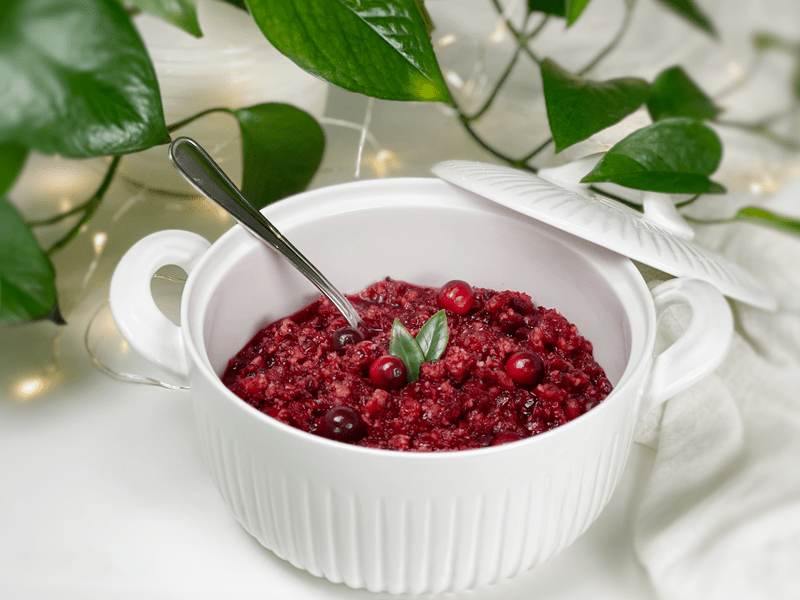
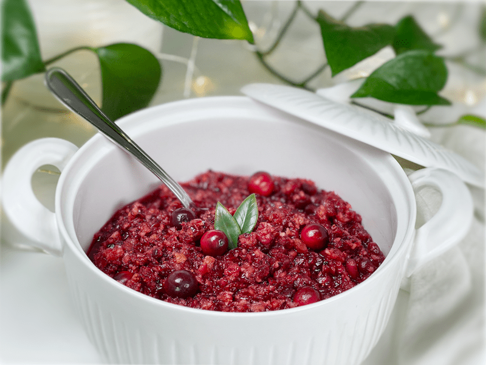
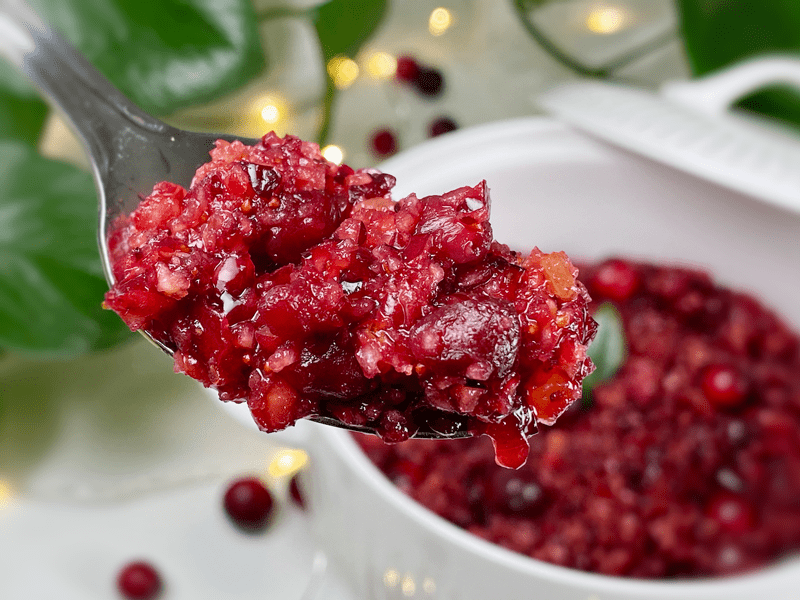
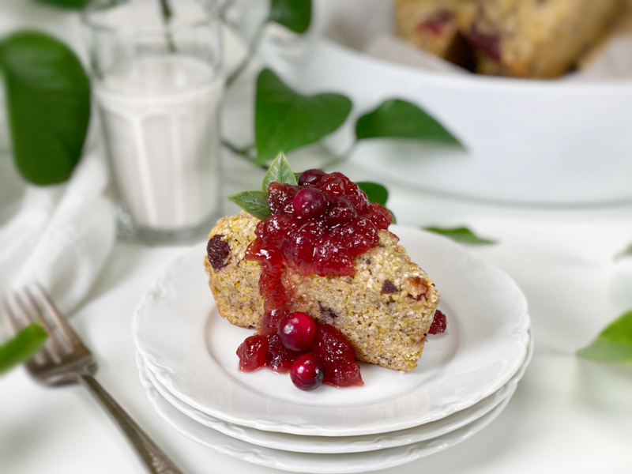

Cranberry and Pomegranate Relish | Raw and Cooked Option
Cranberry relish… you either love it or you don’t. It’s the neglected, afterthought condiment to most Thanksgiving meals, but no holiday table is really complete without it. Let’s face it: nothing says holidays with the family quite like the “sluuurrrp” of a can-shaped blob of ruby-red jelly plopping onto Grandma’s fine china.

Well, no more! No more jiggly, can-shaped cranberry sauce. This easy and delightful recipe takes only 15 minutes to make and a handful of ingredients! Cranberry sauce is supposed to be a balance of sweet and tart. The sauce acts as a cleansing port in a tumultuous storm of fat and salt, which many holiday meals are filled with.
Fresh Cranberries
- Select fresh cranberries to ensure the best flavor. They should be firm to the touch and a red to dark crimson color. You can always try the “bounce test” against a flat surface to ensure your ripe cranberries are nice and springy.
- Fresh cranberries can be found in the grocery store about a month before Thanksgiving and hang around through Christmas. Frozen cranberries are available year-round. They’re picked at peak ripeness, so they’re just as good as fresh ones. Be sure to thaw them before using in the recipe.
- Did you know that the sour taste in cranberries increases bile production from the liver? Bile breaks down fats into fatty acids, which can be taken into the body by the digestive tract.
Pomegranate Arils
- The skin of the pomegranate is thick and inedible, but there are hundreds of edible seeds within. Each seed is surrounded by a red, juicy, and sweet seed covering known as an aril.
- When choosing a pomegranate, look at weight, not color. The heavier the fruit, the more juice it contains–which means it’s that much more delicious. Pomegranates stop ripening as soon as they are picked. If you would like to read how they grow, click (here) for a quick read.
- You can find frozen pomegranate arils in the freezer section, too.
- If you are new to opening pomegranates, click here is my quick and easy tutorial.

Orange Juice and Zest
- When creating this recipe, I knew that I would need a little liquid to get all of the ingredients moving so they could blend together. I opted for orange juice both for sweetness (to help offset the tartness of the cranberries) and for added health benefits.
- Orange zest stimulates metabolism and reduces stomach stagnation–so it is effective for moving that “food baby” in your stomach after a hearty Thanksgiving meal.
- Tip – be sure to zest the orange before juicing it.
Crystallized Ginger
- Ginger was added to give a little helping hand to our sour friend, the cranberry… I used it to “heat” things up. Ginger stokes the digestive fire, it whets the appetite, and improves assimilation and transportation of nutrients to our body tissues.
- Crystallized ginger is also known as candied ginger or glacé ginger (glacé means “icy” in French, and this ginger looks like it’s coated in ice crystals). It’s basically fresh ginger that has been cooked in sugar water and rolled in sugar.
- If you are on the fence about adding ginger, start with 1/8 cup and taste test. You can always add more at the end.

Sweeteners
- It is natural to add sugars to homemade cranberry relish to offset the tartness of the cranberries… but how much will be up to your tastebuds.
- The orange juice and pomegranate arils will impart some sweetness, depending on how sweet they are in their raw form.
- Make the recipe as is, then taste test. You can add more maple syrup if needed. If you don’t want the added sugars, stir in a few drops of NuNatural liquid stevia to help brighten things up.
Tips and Tricks
- To combat bitterness: Before adding more sugar, sprinkle with a pinch of salt (in small amounts, it intensifies sweetness).
- If possible, make this relish up 1-2 days in advance to enhance the flavor.
- Sort through the cranberries before using them, removing any soft or shriveled ones. Also make sure that if you come across any cranberries with a stem, pick them off and discard.
- If you add more sugar to the recipe and it ends up too sweet, add a tiny splash of fresh lemon juice. Give it a stir and taste test. You can add more, just be very light-handed with it. The acidity will tone down the sweetness and give the relish a brightness.
Cooked Version
- If you wish to heat the cranberry relish to deepen the flavor, add 1/2 cup of water to the recipe.
- Bring it to a gentle boil, then reduce the heat to a simmer and cook for about 15 minutes. The color will deepen once it’s done cooking.
- Let the relish cool before refrigerating to completely set.
- You will want to serve the relish at room temp or chilled.
May your days be blessed, amie sue
Ingredients:
Yields 3 cups
- 3 cups fresh cranberries
- 2 Tbsp maple syrup
- 1/2 Tbsp orange zest
- 1/4 cup fresh orange juice
- 3 Tbsp coconut crystals (sugar)
- 1 cup pomegranate arils (seeds)
- 1/8-1/4 cup dried crystallized ginger, diced small
- 1 tsp fresh minced mint
Preparation:
- Pour the cranberries into a colander. Rinse and throw away any that are squishy rather than firm; drain thoroughly and set them aside.
- In the food processor fitted with the “S” blade, combine the cranberries, orange juice, maple syrup, and coconut crystals. Pulse until the cranberries are coarsely chopped.
- When working with fresh ingredients, it is important to taste test as you build a recipe. Learn why (here).
- Place in a serving dish and stir in the pomegranate arils (seeds), orange zest, and mint.
- The cranberry relish can be served chilled or at room temperature, and it will keep in the fridge for several days. Enjoy! And have a glorious Thanksgiving feast!

I had some leftover Cinnamon Vanilla Bean Frosting in the fridge so I scooped it into a pop cycle mold along with some of the cranberry relish… froze it and made some delicious afternoon treats.
© AmieSue.com